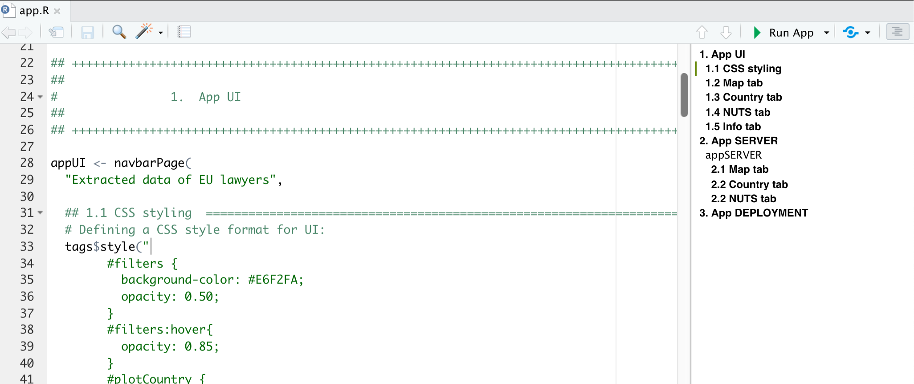

# Required packages
library(pacman)
# Development version
p_load_gh(char = c(
# Visualizations
"xl0418/ggradar2", "davidsjoberg/ggsankey",
dependencies = T
))
# Stable CRAN release
p_load(char = c(
# Visualizations
"showtext", "ggtext", "ggsankey", "ggrepel", "ggplotify",
"gridExtra", "ggradar2", "patchwork",
# Data Loading
"haven", "readxl",
# Other
"margins",
# Good 'ol Tidyverse
"tidyverse"
))2 Coding
In this chapter, we will cover some basic guidelines and styling rules related to how the coding is done at the DAU-WJP. When programming data analysis routines, it is very hard to vanquish the personal style that every person has. Therefore, this chapter is focused on giving general guidelines that will allow to standardize their codes for an easy collaboration among all team members.
Remember, when writing a code, you are just the author not the audience. Therefore, think on how would other people understand what you are writing without the ideas and knowledge you have at the moment of creating your code. Writing comments, using titles as step-by-step guides, documenting the issues, all of these actions will greatly help other team members to understand what you have done and why you have done it. Also, this will help you in the future to understand what you did in the past and reduce the level of dependency of a given project on its collaborators.
2.1 Script Headline and Outline
The headline is very important because it gives the general information about the script, its purposes, the authors, the program version, among other important details. Within the DAU, we have the following template:
## ++++++++++++++++++++++++++++++++++++++++++++++++++++++++++++++++++++++++++++++++++++++++++++++++++++++++++
##
## Script: PROJECT NAME - Script Purpose
##
## Author: Author 1 Name (email)
## Author 2 Name (email)
##
## Creation date: Month Day, Year
##
## This version: Month Day, Year
##
## ++++++++++++++++++++++++++++++++++++++++++++++++++++++++++++++++++++++++++++++++++++++++++++++++++++++++++As you can see, the template highlights the most important information that we need to know when opening a script. This information should give any team member a general idea on the project status even if this person has never collaborated in the project before. However, this is just a first step in the process. Our template goes beyond and it also displays how to use Titles, Subtitles and Steps within the script:
## ++++++++++++++++++++++++++++++++++++++++++++++++++++++++++++++++++++++++++++++++++++++++++++++++++++++++++
##
# 1. TITLE ----
##
## ++++++++++++++++++++++++++++++++++++++++++++++++++++++++++++++++++++++++++++++++++++++++++++++++++++++++++
## 1.1 SUBTITLE ============================================================================================
# Step 1
# Step 2
## 1.2 SUBTITLE ============================================================================================
# Step 1
# Step 2Unlike the Headline seen above, the use of this outline to structure your code will vary from script to script. For example, if you are working on a very short routine of less than 100 lines. You might not need to use titles and subtitles and you would rather choose to only use steps. Therefore, the extent to which this outline is feasible will be a decision of the code administrator.
The main objective of this outline is to provide an organized outline for the script. The utility of this outline increase with the complexity of the code. Although we strongly advice you to avoid very long routines (we will come back to this when we talk about refactoring and modules), we understand that sometimes the code might be very complex by nature. As an example, look at the following script from the Shiny App that we prepared for the EU Project. Even though the code extends for less than 500 lines, it is difficult to read due to the reactivity and laziness concepts that come along when programming a Shiny App.

If you want to knowww more about R scripts and their outlines in RStudio, you should definitely check out this post by Nate Day about How to own outlines in RStudio.
2.2 Loading Packages
On any routine, the first thing is to load the packages that you will be using in the code. Usually, you will see routines calling the library or request modules to load the needed packages. However, given that this is a team collaboration, not everyone have these packages installed or, even if they have it, the script requires a certain version of the package in order to run. Therefore, we need to, not only load, but also check for these other requirements as well.
W=To achieve this, we could write down a series of if conditions. However, we choose to rely on the pacman package to do this. As such, we only request that every team member has this package installed in their local machine. If every team member has it installed, it is quite easy to load the required libraries by calling the p_load function. Take a look at the following example:
Three things are worth noticing. First, if some packages require the development version, we use the p_load_gh to install their latest release from GitHub. Second, we always install the development releases first and then the stable CRAN version at last. This is done in order to leave the tidyverse for last and avoid any other package to mask over the tidyverse functions. Third, for very complex routines, we might need to load several packages, it is strongly recommended to comment on the utility and need for each package so all team members can have a general idea on their use before reading the respective documentation.
2.3 Coding Style
2.3.1 The Tidyverse Style guide
In the DAU, we strongly rely on the guidelines defined by Hadley Wickham in its Tidyverse Style Guide. We request that every DAU member read this style guide before collaborating with other team members in a given project. As stated in the first page of the guide:
Good coding style is like correct punctuation: you can manage without it, butitsuremakesthingseasiertoread.
This guide is, as its name suggest, just a guide. As such, some of its guidelines might not be consistent with the coding style that the DAU as a whole have. Therefore, we do not rely on the use of styler and lintr packages to style our codes. In what follows, we will highlight some topics and also complement with some of our own style guidelines the aforementioned reference.
2.3.2 Commenting
Commenting is one of the most important elements of coding. However, the excessive use of comments might also reflect an issue. The outline presented at the beginning of this chapter introduced the use of titles, subtitles and steps. Under this structure, steps are brief comment lines used to guide the reader on the utility and objective of different chunks of code. Take a look at the following example and how steps are guiding the reader along the code.
# Plotting each panel of Figure 4
imap(c("A" = "q18",
"B" = "q21",
"C" = "q33",
"D" = "q73",
"E" = "q74"),
function(var4plot, panelName) {
# Filtering data2plot to leave the variable for each panel
data2plot <- data2plot %>%
filter(group %in% var4plot)
# Applying plotting function
chart <- LAC_divBars(data = data2plot,
target_var = "perc",
grouping_var = "country",
diverging_var = "status",
negative_value = "Negative",
colors = colors4plot,
labels_var = "label")
# Saving panels
saveIT.fn(chart = chart,
n = nchart,
suffix = panelName,
w = 100.8689,
h = h)
})In a very ideal scenario, the code just need to efficiently use steps in order to be clear. However, we understand that we might face complex situations that need the use of extra lines of comments in order to be clear. Under this scenario, please use comments to explain the why and not the what or how. For example, look at the following example from the WJP Data Viz repository:
In this example, we need to explain why did we choose to use ggradar2 to plot a base figure and then complement the resulting plot using ggplot2, instead of just relying on ggplot2. Given that this is a uncommon course of action, we give a detailed explanation of our reasons. This is a good example on when and how to use comments to complements steps in a script. Nevertheless, the excessive need of using this long commenting lines might suggest that e need to modify or re-write our code to make it clearer.
Finally, it is worth to mention that you do not meed to be afraid of breaking long pipe sequences in order to add a step in between pipes in order to make your code easier to read. Take a look at the following example in which we introduced steps within the mutate() pipe in order to make our code easier to read and understand.
# Defining data frame for plot
data2plot <- data_subset.df %>%
filter(country == mainCountry & year %in% yrs) %>%
select(year, starts_with("q49"), EXP_q23d_G1) %>%
mutate(
# We need to concatenate variables q49d_G1 and EXP_q23d_G1 into a single one
q49d_G1_merge = rowSums(across(c(q49d_G1, EXP_q23d_G1)),
na.rm = T),
q49d_G1_merge = if_else(is.na(q49d_G1) & is.na(EXP_q23d_G1),
NA_real_,
q49d_G1_merge),
# Transforming everything into binary variables
across(!year,
~if_else(.x == 1 | .x == 2, 1,
if_else(!is.na(.x) & .x != 99, 0, NA_real_)))
) %>%
select(!c(q49d_G1, EXP_q23d_G1)) %>%
group_by(year) %>%
summarise(across(everything(),
mean,
na.rm = T)) %>%
rename(group = year)2.3.3 Line lenght and breaks
In the script headline and outline that we presented above, as you could have observed, the titles and subtitles were accompanied by dividing lines such as:
## +++++++++++++++++++++++++++++++++++++++++++++++++++++++++
## =========================================================As explained in this post, the main objective of using these lines is to organize our script outline in RStudio. However, they have another function in our workflow and it is to set the line lenght for the entire script.
As we know, it is easier to read code vertically than horizontally. That’s why most coding guides stablish a line length for aesthetics and if you are writing a line of code that exceeds this lenght, it is highly recommended to break the line. Within the DAU, we have established a line length of 110 characters, which is exactly the length of the dividing lines in our template. As a rule, not a single line of code should be longer than the dividing lines. If by any reason, your line of code exceeds it, you should break into multiple lines. There are multiple ways to achieve this, here we just provide a few examples and guidelines about it.
2.3.3.1 Use one argument per line
Try to always break the line after every comma so you can leave one argument per line. However, more than a rule, this should be considered a guide and in some case it might be better to omit this guide for aesthetics purposes. For example, take a look at this example:
# Defining data frame containing the info to plot
data2plot <- data_subset.df %>%
filter(country == mainCountry & year == latestYear) %>%
select(CAR_q59_G1,
CAR_q59_G2,
unlist(vars4plot,
use.names = F)) %>%
mutate(
govSupp = case_when(
CAR_q59_G1 == 1 | CAR_q59_G2 == 1 ~ "Gov. Supporter",
CAR_q59_G1 == 2 | CAR_q59_G2 == 2 ~ "Non Gov. Supporter",
CAR_q59_G1 == 99 | CAR_q59_G2 == 99 ~ NA_character_,
is.na(CAR_q59_G1) & is.na(CAR_q59_G2) ~ NA_character_
),
across(!c(CAR_q59_G1, CAR_q59_G2, govSupp),
~if_else(.x == 1 | .x == 2, 1,
if_else(!is.na(.x) & .x != 99, 0,
NA_real_)))
) %>%
group_by(govSupp) %>%
filter(!is.na(govSupp)) %>%
summarise(across(everything(),
mean,
na.rm = T)) %>%
pivot_longer(!govSupp,
names_to = "category",
values_to = "value2plot")Take a look at how I decided to keep one argument per line in the select(), summarise() and pivot_longer() functions, but not for the if_else() function within the mutate() call or when supplying multiple arguments in the form of a vector c() within the across() call. Sometimes, is easier to read or even aesthetically better if you keep short arguments and calls in a single line.
2.3.3.2 Break long calls
I think that at this point, it is more than obvious that if you are creating new variables using mutate() or summarise(), you should leave each call in a new line. However, what it is not that obvious is that breaking the line right after you call the function can improve the readability of your code by a lot. Take a look at the mutate() in the previous example. We break the line after the opening parenthesis in that mutate, we generate the new variables, and then we leave the closing parenthesis alone in a new line at the end. This is a trick that I learned from HTML and that it helps a lot when you have very long sequences within a function. This tip also applies to other functions that usually require long sequences of arguments such as case_when(), which you can also check in the example above.
2.3.3.3 paste() is your best friend when dealing with long strings
There are a few times in data analysis when you face long strings and you have to deal with it. Take a look at the following example in which we had to write down long labels in HTML. We decided to leave the tags (,
, etc) in separate lines so the reader could easily distinguish between CSS attributes and visible text.
# Defining labels - Part II: Percentages + text as HTML
applying_labels.fn <- function(text = text, color_code, value_vectors){
case_when(
text == 'q7' ~ paste("<span style='color:black;font-size:6.3mm;font-weight:bold'>",
value_vectors["q49a"],
"</span>",
"<br>",
"<span style='color:#524F4C;font-size:3.5mm;font-weight:bold'>",
"Is effective in bringing<br>people who commited<br>crimes",
"</span>"),
text == 'q8' ~ paste("<span style='color:black;font-size:6.3mm;font-weight:bold'>",
value_vectors["q49b_G2"],
"</span>",
"<br>",
"<span style='color:#524F4C;font-size:3.5mm'>",
"Ensures equal treatment<br>of victims by allowing all<br>",
"victims to seek justice<br>regardless of who they are",
"</span>")
)}2.3.4 Indentations and column alignment
Data analysis usually comes packed with large chunks of code that are easy to read for the author. However, for someone that it is not the author of these lines, it might be difficult to read these large chunks of codes. Therefore, as authors, we need to make it easy for the audience to read our code. We already talked about adding comments, line breaks and other similar tasks that can increase the readability of our code. One more thing to take into account is the visual aesthetics of our code. Clean and tidy code is easier to read and follow for someone who is not familiar with it. Small changes to your code can greatly improve its readability. One of such small changes is to properly use indentations to align collumns.
Let’s try something. Take a look at the following ggplot theme definition and try to locate the font face defined for the text in the Y-Axis:
WJP_theme <- function() {
theme(panel.background = element_rect(fill = "white", size = 2),
panel.grid.major = element_line(size = 0.25, colour = "#5e5c5a", linetype = "dashed"),
panel.grid.minor = element_blank(),
axis.title.y = element_text(family = "Lato Full", face = "plain", size = 3.514598*.pt, color = "#524F4C",
margin = margin(0, 10, 0, 0)),
axis.title.x = element_text(family = "Lato Full", face="plain", size = 3.514598*.pt,
color = "#524F4C", margin=margin(10, 0, 0, 0)),
axis.text.y = element_text(family = "Lato Full", face = "plain",
size = 3.514598*.pt, color = "#524F4C"),
axis.text.x = element_text(family = "Lato Full", face="plain", size=3.514598*.pt, color="#524F4C"),
axis.ticks= element_blank(),
plot.margin = unit(c(0, 0, 0, 0), "points")
)
}Now, take a look at the same theme definition and try to locate the same argument I told you before, but now, with a tidily organized code:
WJP_theme <- function() {
theme(panel.background = element_rect(fill = "white",
size = 2),
panel.grid.major = element_line(size = 0.25,
colour = "#5e5c5a",
linetype = "dashed"),
panel.grid.minor = element_blank(),
axis.title.y = element_text(family = "Lato Full",
face = "plain",
size = 3.514598*.pt,
color = "#524F4C",
margin = margin(0, 10, 0, 0)),
axis.title.x = element_text(family = "Lato Full",
face = "plain",
size = 3.514598*.pt,
color = "#524F4C",
margin = margin(10, 0, 0, 0)),
axis.text.y = element_text(family = "Lato Full",
face = "plain",
size = 3.514598*.pt,
color = "#524F4C"),
axis.text.x = element_text(family = "Lato Full",
face = "plain",
size = 3.514598*.pt,
color = "#524F4C"),
axis.ticks = element_blank(),
plot.margin = unit(c(0, 0, 0, 0), "points")
)
}Which one was easier for you?
In the previous example, the difference might appear to be small. However, the advantage of using a tidy and clean way to write your code will exponentially increase with the length and complexity of your code. Locating an element in a chunk of 30 lines is easier than locating an element in a chunk of 300 lines.
2.4 Re-factoring and modular programming
Writing code in a proper way is not only about how easy to read is your code, but also, how easy it is to maintain. If you need to change something, you should be able to do it cleanly and quickly. Nevertheless, most of the time, these two goals are not aligned and it is your job to achieve an optimal balance.
Take a look at the following code in which we are defining a text to be in HTML format:
data_modified <- data %>%
mutate(
label = case_when(
text == 'q49a' ~ paste("<span style='color:", color_code, ";font-size:6.326276mm;font-weight:bold'>",
value_vectors["q49a"],
"</span>",
"<br>",
"<span style='color:#524F4C;font-size:3.514598mm;font-weight:bold'>",
"Is **effective** in bringing<br>people who commit<br>crimes to justice",
"</span>"),
text == 'q49b_G2' ~ paste("<span style='color:", color_code, ";font-size:6.326276mm;font-weight:bold'>",
value_vectors["q49b_G2"],
"</span>",
"<br>",
"<span style='color:#524F4C;font-size:3.514598mm'>",
"Ensures **equal treatment<br>of victims** by allowing all<br>",
"victims to seek justice<br>regardless of who they are",
"</span>"),
text == 'q49e_G2' ~ paste("<span style='color:", color_code, ";font-size:6.326276mm;font-weight:bold'>",
value_vectors["q49e_G2"],
"</span>",
"<br>",
"<span style='color:#524F4C;font-size:3.514598mm'>",
"Safeguards the<br>**presumption of<br>innocence** by treating<br>those",
"accused of<br>crimes as innocent<br>until proven guilty",
"</span>"),
text == 'q49c_G2' ~ paste("<span style='color:", color_code, ";font-size:6.326276mm;font-weight:bold'>",
value_vectors["q49c_G2"],
"</span>",
"<br>",
"<span style='color:#524F4C;font-size:3.514598mm'>",
"Ensures **equal treatment of<br>the accused** by giving all a<br>",
"fair trial regardless of who<br>they are",
"</span>"),
text == 'q49e_G1' ~ paste("<span style='color:", color_code, ";font-size:6.326276mm;font-weight:bold'>",
value_vectors["q49e_G1"],
"</span>",
"<br>",
"<span style='color:#524F4C;font-size:3.514598mm'>",
"Gives **appropriate<br>punishments** that fit<br>the crime",
"</span>"),
text == 'q49d_G1_merge' ~ paste("<span style='color:", color_code, ";font-size:6.326276mm;font-weight:bold'>",
value_vectors["q49d_G1_merge"],
"</span>",
"<br>",
"<span style='color:#524F4C;font-size:3.514598mm'>",
"Ensures **uniform quality** by<br>providing equal service<br>",
"regardless of where<br>they live",
"</span>"),
text == 'q49c_G1' ~ paste("<span style='color:", color_code, ";font-size:6.326276mm;font-weight:bold'>",
value_vectors["q49c_G1"],
"</span>",
"<br>",
"<span style='color:#524F4C;font-size:3.514598mm'>",
"Ensures everyone<br>has **access** to the<br>justice system",
"</span>"),
text == 'q49b_G1' ~ paste("<span style='color:", color_code, ";font-size:6.326276mm;font-weight:bold'>",
value_vectors["q49b_G1"],
"</span>",
"<br>",
"<span style='color:#524F4C;font-size:3.514598mm'>",
"Ensures **timeliness**<br>by dealing with<br>cases promptly",
"and<br>efficiently",
"</span>")
)
)What will happen if, out of nowhere, the design team ask you to increase the font size from 3.514mm to 3.758mm? They are asking for a single change, but how many time would you have to modify that font size? What if you make a mistake or you skip one of those changes? As you can see, this is an easy to read code, but it ends up being very hard to maintain.
Let’s review this code again and see how can it be improved. The first thing that we can notice is that we are repeating the same 5 lines several times. As I once read on the internet:
When you’ve written the same code 3 times, write a function.
Let’s do exactly that:
data_modified <- data %>%
mutate(
# Defining text
label = case_when(
text == 'q49d_G1_merge' ~ paste("Ensures **uniform quality** by<br>",
"providing equal service<br>",
"regardless of where<br>they live"),
text == 'q49c_G1' ~ paste("Ensures everyone<br>has **access** to",
"the<br>justice system"),
text == 'q49b_G1' ~ paste("Ensures **timeliness**<br>by dealing",
"with<br>cases promptly",
"and<br>efficiently"),
text == 'q49a' ~ paste("Is **effective** in bringing<br>people who",
"commit<br>crimes to justice")
text == 'q49b_G2' ~ paste("Ensures **equal treatment<br>of victims**",
"by allowing all<br>",
"victims to seek justice<br>regardless of who they are"),
text == 'q49e_G2' ~ paste("Safeguards the<br>**presumption of<br>",
"innocence** by treating<br>those",
"accused of<br>crimes as innocent<br>until proven guilty"),
text == 'q49c_G2' ~ paste("Ensures **equal treatment of<br>the accused**",
"by giving all a<br>",
"fair trial regardless of who<br>they are"),
text == 'q49e_G1' ~ paste("Gives **appropriate<br>punishments** that",
"fit<br>the crime")
),
# Converting labels into HTML syntax
across(label,
function(raw_label){
html <- paste0("<span style='color:", color_code,
";font-size:6.326276mm;font-weight:bold'>",
value_vectors[text],
"</span>",
"<br>",
"<span style='color:#524F4C;font-size:3.514598mm'>",
raw_label,
"</span>")
return(html)
})
)This way, the code has become shorter and easier to maintain. If we need to change the font size, we do it just one time. Both chunks of code have the same result, but we change the way they produce that result. This process is called re-factorization. To learn more about this and all the re-factoring methods, you can check refactoring.guru.
Another complementary way to keep your code tidy and easy to maintain is to reduce the length of your script by splitting it into multiple scripts according to their functionality or modules. This process is called modular programming.
A script of more than a thousand lines might be very difficult to maintain in Data Science. Therefore, it is very advisable to split it into several modules. For example, if you are working on a very long script, you can group all the lines where you load all the required settings and data and save it into a module called settings.R, and you can source() it from your main script. Look at the following example where we source all the different modules from a local directory called R and even directly from GitHub:
# Required Packages, Fonts, ggplot theme, color palettes, comparison countries and other general routines are
# loaded from the following script:
source("Code/settings.R")
# Loading functions for sections
source("Code/S01.R")
source("Code/S02.R")
source("Code/S03.R")
# Loading plotting functions from GitHub
source("https://raw.githubusercontent.com/ctoruno/WJP-Data-Viz/main/loading.R")Breaking your code into modules makes your code easier to read because it means separating it into smaller pieces that only deal with one aspect of the overall functionality. By doing this, your are making your code:
Easier to test
Easier to find things later
Easier to re-use
Easier to re-factor
Easier to collaborate with
Overall, it has a lot of advantages in comparison to monolithic and overwhelming code. Nonetheless, if you overuse it without a logic behind, it can end up making your code messy. As a result, you need to be careful when making modular programming.